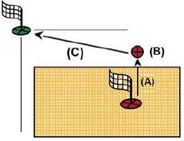
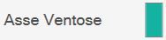
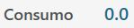

Al iniciar la aplicación, si ya se ha realizado la puesta a cero de los ejes, se mostrará la siguiente pantalla inicial:
¡ATENCIÓN!
Durante la puesta en marcha de la máquina es imprescindible prestar la máxima atención al realizar movimientos con los ejes sin haber efectuado la puesta a cero; podrían producirse colisiones con los finales de carrera mecánicos de la máquina y comprometer su correcto funcionamiento.
Parámetros Permite acceder a los parámetros del programa Parametrix.
Parámetros de herramienta Al pulsar el botón, se accede a la página de parámetros de la herramienta. Consulte el capítulo «Configuración de la herramienta» para obtener una descripción detallada de la página de parámetros.
Rotación automática 0/ 90 grados El eje «C» se desplaza automáticamente a 0 o 90 grados en el momento en que se pulsa el botón.
Aparcamiento automático Al pulsarlo, la máquina realiza automáticamente un desplazamiento de los ejes «X», «Y», «Z» y «C» hasta la posición cero. Los desplazamientos son realizados por la máquina respetando el siguiente orden: (A) - Eje «Z» en posición de cero absoluto; (B) - Eje «C» en posición de 0 absoluto; (C) - Ejes «X» e «Y» simultáneamente en posición de cero absoluto;

¡ATENCIÓN!
Para realizar el aparcamiento automático deben cumplirse determinadas condiciones de seguridad:
La posición del eje «A» debe estar a 0_.
Asegúrese de que la zona de movimiento afectada por el posicionamiento (véase la figura al lado) esté libre.
Cero Realiza la puesta a cero de los ejes (esta operación es necesaria al arrancar la máquina o cuando los indicadores rectangulares están rojos). Una vez finalizado el ciclo de puesta a cero, los indicadores serán de color gris. La fase de puesta a cero prevé el movimiento secuencial de los ejes:
Eje Z
Eje A
Eje C
Simultáneamente los ejes X e Y
Eje B (Opcional: torno controlado)
NOTA
La puesta a cero solo está permitida cuando la llave codificada está insertada en el puesto correspondiente, identificable en la consola del operador.
Encendido / Apagado del agua interna Al pulsar este botón se activa el agua desde el interior de la herramienta. El indicador situado encima del botón cambia de color: Verde = Encendida; Rojo = Apagada.
Encendido / Apagado del agua Al pulsar este botón se activa el agua del conducto principal. El indicador situado encima del botón cambia de color: Verde = Encendida; Rojo = Apagada.
Cambio manual de herramienta Al pulsar el botón, se inicia el procedimiento de cambio de herramienta.
Mantenimiento Al pulsar este botón se mostrará una ventana que contiene todas las operaciones de mantenimiento de la máquina. Se mostrarán tanto las operaciones de mantenimiento que deben realizarse como las que se encuentran dentro de los parámetros normales. Si al menos una operación de mantenimiento lo requiere.
Ayuda Al pulsar este botón se modifican ligeramente los gráficos de todos los botones visibles y su comportamiento. A partir de ese momento es posible pulsar cualquier botón que tenga un pequeño signo de interrogación en la esquina superior izquierda para conocer la función ofrecida por el botón mediante un breve mensaje. Para salir de este modo de asistencia, basta con pulsar de nuevo el botón «Ayuda».
En esta interfaz se muestran los valores de los ejes de la máquina.
Ejemplo del elemento de la interfaz «Ejes» con origen 0 y puesta a cero de los ejes ya realizada:
Ejemplo del elemento de la interfaz «Ejes» con origen 0 y puesta a cero de los ejes aún por realizar:
A continuación se explican los elementos que componen esta sección de la interfaz común, tomando como referencia el caso en que los ejes ya están puestos a cero.
Cota real: indica la posición del eje respecto al origen activo. Cota objetivo: indica la cota que debe establecerse para efectuar el movimiento del eje pulsando el botón MDI o RTCP. F: Feed, velocidad de movimiento expresada en mm/minuto. DTG: Distance To Go, distancia hasta el objetivo. A: Amperios.
Restablecer eje Al pulsar este botón se establece el cero del origen activo en el punto en el que se encuentra el eje correspondiente (X, Y o Z). La operación de restablecimiento del eje solo puede realizarse en orígenes distintos de 0 (cero). Para utilizar el origen en coordenadas de herramienta (TCP), es necesario haber establecido las medidas correctas de la herramienta montada antes de pulsar el botón Restablecer eje.
Rotación automática _90 grados La posición del eje «C» aumenta 90 grados en sentido horario. Ejemplo: la máquina se encuentra a 12 grados; al pulsar el botón «Rotación automática _90 grados», la máquina se desplaza a 102 grados: 12 _ 90.
Rotación automática -90 grados La posición del eje «C» disminuye 90 grados en sentido antihorario. Ejemplo: la máquina se encuentra a 102 grados; al pulsar el botón «Rotación automática -90 grados», la máquina se desplaza a 12 grados: 102 - 90.
En este panel se presentan algunos botones cuyo comportamiento se explica a continuación:
MAN (Activa el movimiento manual) Para poder utilizar la máquina en modo manual es necesario colocar correctamente los husillos y activar algunas funciones. El botón está previsto para este fin.
NOTA
Cuando está activado el uso manual, el LED indicador situado al lado se vuelve verde.

Eje de ventosas Eje de referencia sobre el que están montadas las ventosas.
Umbral de alarma Indica el umbral por encima del cual se activa la alarma y se bloquea la rotación del husillo.
Origen seleccionado Al hacer clic en el campo «Origen», el operador podrá modificar el origen con el que trabajar. La modificación de este campo provoca la actualización de los valores de los Ejes. Los valores de Origen pueden variar de 0 a 19, ambos incluidos.
MDI Al pulsarlo, la máquina realiza el movimiento hasta alcanzar las cotas establecidas en las cotas objetivo (véase arriba). La velocidad de los ejes X e Y se controla mediante sus respectivos potenciómetros, mientras que los demás ejes se controlan mediante el potenciómetro interpolado.
A continuación se muestra solo una de las ventanas disponibles para el operador en la gestión de los discos instalados, ya que las demás presentan funciones análogas.
Primer eje de referencia Primer eje de referencia para cada disco (en el ejemplo X1 para DISCO1)
NOTA
En el posicionamiento de los ejes X se toma como referencia para la cota
objetivo el centro del disco; la cota actual diferirá en la mitad del alma del disco.
Segundo eje de referencia Segundo eje de referencia para cada disco (en el ejemplo Z1 para DISCO1)
Iniciar/Detener rotación del husillo Gestiona el encendido y apagado del disco del husillo al que se refiere. La velocidad del disco se selecciona en los parámetros de herramienta.
Activar/Desactivar agua externa del husillo Permite gestionar el encendido y apagado del agua correspondiente a la herramienta seleccionada.

Consumo Indica la corriente absorbida por el motor del husillo.
Activación / desactivación de ventosas La pantalla muestra el grupo de ventosas visto desde arriba en las distintas zonas en las que está dividido. Al pulsar la zona correspondiente, cambia su estado. Si está en verde, indica que la zona está preparada para realizar el vacío. Si está en rojo, indica que la zona está preparada para el soplado.
VENTOSAS: SUBIR - Aparcamiento de ventosas Al pulsar el botón, las ventosas se retraen para llevarlas a la zona de reposo/aparcamiento.
VENTOSAS: BAJAR - Preparar ventosas Al pulsar el botón, las ventosas descienden desde la zona de aparcamiento hasta el final de carrera. Es importante que las ventosas dispongan del espacio necesario para salir completamente.
ELEVAR PIEZA: LIBERAR - Descarga de la pieza Al pulsar el botón, el eje Z baja hasta que el material entra en contacto con la superficie de trabajo, se apaga la bomba de vacío y se activa el soplado de todas las ventosas para desprender la pieza. Tras esperar un tiempo de espera, el eje se eleva hasta la cota de seguridad.
ELEVAR PIEZA: INICIAR - Elevación de la pieza Con este mando, las ventosas se ponen en contacto con el material, se activa la bomba de vacío en las zonas marcadas en verde y el soplado en las zonas marcadas en rojo y, cuando el vacuostato indica que se ha generado el vacío, el eje se eleva hasta la posición establecida para los movimientos.
¡ATENCIÓN!
Preste atención a las ventosas activas y utilice la mayor superficie posible para elevar la pieza.
VACÍO - Mando de la bomba de vacío Este botón enciende y apaga la bomba de vacío. El indicador muestra si la bomba está encendida (verde) o apagada (rojo).
SOPLADO - Mando de soplado El botón activa o desactiva el soplado de las ventosas que no están configuradas para el vacío. El indicador muestra si el soplado está activado (verde) o desactivado (rojo).
Preste especial atención a las ventosas activas durante la elevación, asegurándose de que las áreas utilizadas sean suficientes para elevar la pieza que se va a mover. Procure utilizar siempre la mayor superficie de vacío disponible para sujetar la pieza y compruebe que no haya defectos ni roturas en el material que puedan generar peligros o problemas de funcionamiento de la máquina. Una vez encendida la bomba de vacío, solo puede apagarse mediante las funciones automáticas previstas para ello. Pulsar el botón de reset o la seta de emergencia no tiene ningún efecto sobre la bomba de vacío, que seguirá funcionando. El apagado de la bomba puede forzarse mediante el botón correspondiente dentro de la página «Mandos adicionales». En los procedimientos automáticos, antes de elevar la pieza se comprueba el estado del vacío mediante un sensor específico: si no se detecta un valor de vacío suficiente, aparece la alarma «falta de vacío». La bomba seguirá activa hasta que el vacuostato detecte un valor correcto o hasta que se desactive desde la página «Mandos adicionales».
¡ATENCIÓN!
La falta de alimentación de la bomba de vacío provoca una rápida pérdida del vacío y la consiguiente caída del material elevado con las ventosas.
La barra inferior muestra mensajes informativos y de error, así como algunos botones para determinadas funciones. A continuación se muestran tres ejemplos de barra inferior:
Sin alarmas activas.
Con una emergencia general habilitada, indicada mediante un icono, un código de error (en este caso PE0000), la descripción correspondiente y el botón de alarmas de la derecha parpadeando.
Con un mensaje mostrado, en el ejemplo JOG directo activo.
Alarmas Permite al operador acceder a la ventana de alarmas.
Minimización del software Permite al operador salir de la página del software.
Apagado de la máquina Permite al operador apagar definitivamente la máquina.
La página de alarmas indica las Alarmas/Mensajes activos del sistema. Si la máquina no tiene alarmas activas, la página aparece vacía; de lo contrario, habrá una fila por cada error presente. En la siguiente página de ejemplo relativa a la gestión y visualización de alarmas se muestra una alarma activa en el sistema: